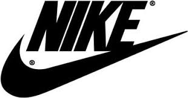

NIKE

NIKE FUE FUNDADA COMO BLUE RIBLOON SPORTS
POR PHIL KNIGHT Y BILL BOWERMAN
NIKE APARTE DE CALZADO TAMBIEN VENDE
PRODUCTOS PARA DEPORTE Y EJEFRCICIO
COMO BALONES, EQUIPO, CALZADO Y ROPA
KNIGHT FUE ALUMNON DE BOWERMAN EN EL EQUIPO DE ATLETISMO
DE LA UIVERSIDAD DE OREGON. NIKE COMO NOMBRE
DE FABRICA LO PROPUSO EL PRIMER EMPLEADO
MAS VENDIDOS
- AF1
- AIR MAX
- BLAZER MID
- AIR JORDAN
- DUNK LOW
NIKE